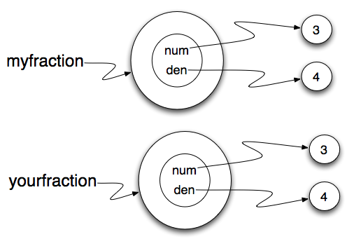

Sameness¶
The meaning of the word same seems perfectly clear until you give it some thought and then you realize there is more to it than you expected.
For example, if you say, Chris and I have the same car, you mean that his car and yours are the same make and model, but that they are two different cars. If you say, Chris and I have the same mother, you mean that his mother and yours are the same person.
When you talk about objects, there is a similar ambiguity. For example, if two Fractions are the same, does that mean they contain the same data (same numerator and denominator) or that they are actually the same object?
We’ve already seen the is operator in the chapter on lists, where we talked about aliases. It allows us to find out if two references refer to the same object.
(fractions_is)
Even though myfraction and yourfraction contain the same numerator and denominator, they are not the same object.
If we assign myfraction to ourfraction, then the two variables are aliases of the same object.

This type of equality is called shallow equality because it compares only the references, not the contents of the objects. Using the == operator to check equality between two user defined objects will return the shallow equality result. In other words, the Fraction objects are equal (==) if they are the same object.
Of course, we could define equality to mean the fractions are the same in that they have the same numerator and the same denominator. For example, here is a boolean function that performs this check.
def sameFraction(f1, f2):
return (f1.getNum() == f2.getNum()) and (f1.getDen() == f2.getDen())
This type of equality is known as deep equality since it compares the values “deep” in the object, not just the reference to the object.
(fractions_eq1)
Of course, if the two variables refer to the same object, they have both shallow and deep equality.
Beware of ==
“When I use a word,” Humpty Dumpty said, in a rather scornful tone, “it means just what I choose it to mean — neither more nor less.” Alice in Wonderland
Python has a powerful feature that allows a designer of a class to decide what an operation like == or < should mean. (We’ve just shown how we can control how our own objects are converted to strings, so we’ve already made a start!) We’ll cover more detail later. But sometimes the implementors will attach shallow equality semantics, and sometimes deep equality, as shown in this little experiment:
p = Point(4, 2)
s = Point(4, 2)
print("== on Points returns", p == s) # by default, == does a shallow equality test here
a = [2, 3]
b = [2, 3]
print("== on lists returns", a == b) # by default, == does a deep equality test on lists
This outputs:
== on Points returns False
== on lists returns True
So we conclude that even though the two lists (or tuples, etc.) are distinct objects with different memory addresses, in one case the == operator tests for deep equality, while in the case of points it makes a shallow test.